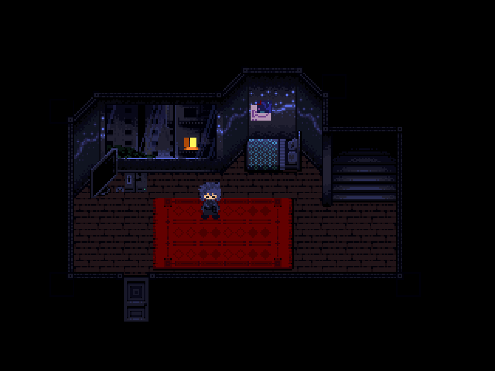
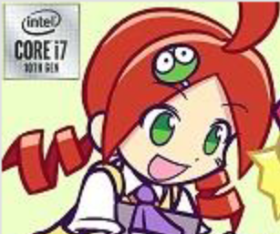
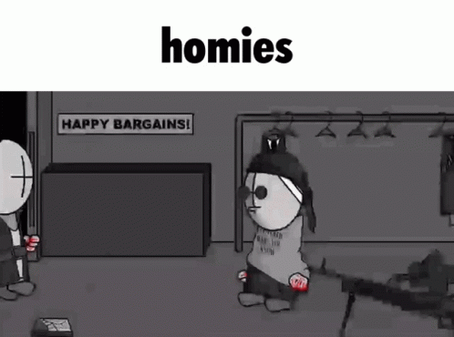

about
 |
this here is my own website, made mostly in visual studio code. it's a static website, so i have to use some backwards workaround shit to do shut like loading in a header and footer. there's some code at the top and bottom of every page that loads them, that and a back button! if you're having trouble reading the marquee, my name's rust! i'm a vector artist that lives in the middle of nowhere in a time rift. my main aesthetic is a bit of y2k while retaining a sharp and geometric style. im not really known for anything. i guess that one yu-gi-oh gx post i made that got popular on tumblr could count as one thing. i guess |
| yes :] | no :[ |
|---|---|
| touhou (fumos especially) |
people backtalkling me in private |
| yume nikki | osu! |
| osc (bfb, ii(2), iotfoec, one, obs, etc) |
most of twitter |
| music (hard/breakcore, jazz, vgm, tracker) |
spencer everly (yeah cry about it) |
| puyo puyo | activision blizzard |
| hunter x hunter | modern algorithm-exploitative youtube |
| girls last tour | people who enforce religion when not needed |
| vinesauce (joel and vinny) |
"soft uwu fuzzy" aesthetics (you look more like a creep doing that) |
| druaga1 | sudden lash-outs |
| jixaw | vomit |
| avgn | anything under dni criteria |
| grayfruit | wet vegetables (i prefer dry) |
| caddicarus | noise pollution |
| simpleflips | changed (game) |
| peter knetter | fursuits |
| dankpods | irl violence |
| moistcr1tikal/penguinz0 | weird gross fleshy slimy stuff |
| super mario bros z | people who just bitch about everything |
| wipEout/ballisticng | using gay as an insult |
| n-game/n+/n++ (the game) | mcyt |
| madness combat | jumpstreams and chordjacks |
| algodoo | dragon maid (again you look like a creep watching it) |
| shapez.io | that recent news with chris-chan and his mom |
| dx-ball | 4chan and kiwifarms |
| tetris | south park |
| sci-fi | dhar mann-type content |
| y2k aesthetics | ninjamuffin and fnf |
| pirating adobe products (always respectable) |
stage fright |
| rhythm games | un-ironically liking among us |
| coding this website | fortnite |
| obscure content | "lolicore" |
| 2000s/2010s flash era stuff | smash bros fandom |
| bonus stage (keentoons) | homestuck fandom |
| bloons tower defense 5 | logo editing community |
| ytp(mv)s | mentions of recent suicide events |
| arfenhouse | vannossgaming |
| futurism | genshin impact |
| amen-style percussion | mobile games |
| internet historian | sponsor ads |
| stuff that's so bad its funny | behind the meme |
| bunnykill | homestuck fandom and psycholonials |
| emperorlemon | disassociation |
| killysunt | abandonment |
| rtgame | poop fetishes |
| british accents (this is okay to include right?) |
crunchyroll |
| unendingly dark takes on normally happy go lucky stuff (puyo puyo and yu-gi-oh gx) |
nathan the silver (you know who you fucking are) |
| thinking on what could've been with stuff (a lot applies) |
my passion projects as of the moment are klaust_ and puyopunk, with side projects including but not limited to cfan6 and potentially something with hunter x hunter!
|  | klaust_ is a yume nikki fan-game i've been working on since 2019 with bmp, with no planned release date...probably not 2021. maybe. i don't know actually! the character you play as is rikotsura, a blue haired, 19-year-aged fluffy lil girl. she's so awesome. so cool. look at her house its so awesome i love her klaust_ does a bit more compared to the average fan-game, with more focus on finding new things actively (less mindless wandering with nothing to do) and some kickass artwork. it's going to take a while before any public builds are available, so for now you only get images. it'll be available for download and possibly in-browser! |
| puyopunk is the project i've probably done the most active work with. it's a sci-fi post-apocalyptic time-skip take on a puzzle game known as puyo puyo. i've always found puyo puyo's writing, characters, and aesthetics to be poorly constructed and unable to work with that blasted blob puzzle game mechanic. what i did here was take everything you know about puyo puyo and destroy it. utterly crush it to hell and back. i then apply my RUST_ BRANDED ASETHETICS and flip everything upon itself and make things cool...cause! there's no real rhyme or reason past that. |  |
characters that i think are cool
|  | ringo andou |
|  | sanford n deimos |
.png) |
gon and killua |
kurapika |
contactdiscord - rust_#0051pesterchum - ravenGenetrix tumblr | youtube | deviantart | roblox | twitter | scratch | last.fm |
banners

 do not hotlink! |
|
// DNI (do not interact if:) // |
|

play klaust_ when it releases